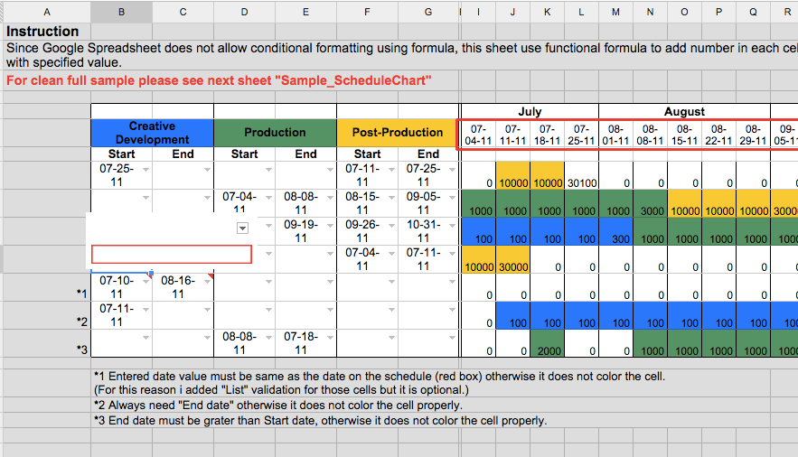
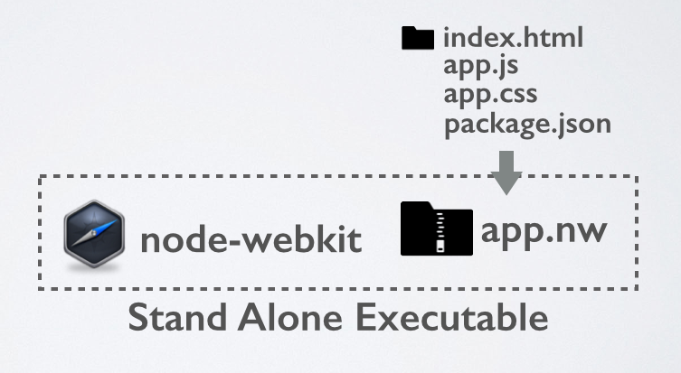
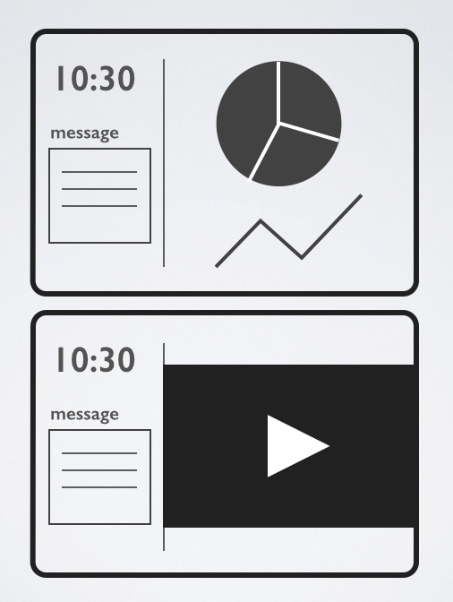

A TINY SYSTEM
FOR
BIG SCREENS
DESKTOPIFY
YOUR
WEB CHOPS
with node-webkit
@kosamari
Developer @LiveIntent
Tools for PEOPLE
Past Life...
TINY SYSTEM
Tools
TOOLS
- portable
- reusable
- maintainable
BIG SCREEN
But how ?
Darkside...

I know...
- HTML
- CSS
- Javascript
OK google?

WHAT IS NODE-WEBKIT ?
node-webkit
- Web application runtime
- Node.js (system API)
- chromium browser (rendering)
- Runs on OS X, Windows and Linux
- Shared event loop
- @rogerwang https://github.com/rogerwang/node-webkit
Quick Start
slideshow/
|
Quick Start
|
slideshow/
|
Quick Start
|
slideshow/
|
More : package.json
{
"name": "MyApp",
"main": "app.html",
"window": {
"frame": false,
"width": 600,
"height": 400
},
"scripts": {
"start": "path/to/nodewebkit/"
}
}
More : Node frames
//app.html
<script src="./js/client.js"></script>
<script>
var app = require('./js/nodeapp.js');
app.run();
...
//nodeapp.js
exports.run = function(arg){…}
window.document.getElementById('id')
//err document.getElementById('id')
Access to require, global, process, Buffer and root from Node
More : GUI
var gui = require('nw.gui');
var menubar = new gui.Menu({ type: 'menubar' });
var mainMenu = new gui.Menu();
mainMenu.append(new gui.MenuItem({
label: 'version',
click: function(){ alert('Version : 0.0.1');}
}));
menubar.append(new gui.MenuItem({
label: 'MainMenu',
submenu: mainMenu
}));
gui.Window.get().menu = menubar;
Execute Node.js script
var exec = require('child_process').exec;
exec('npm start', {cwd:'/path/to/'});
}
Run
PACKAGE
https://github.com/rogerwang/node-webkit/wiki/How-to-package-and-distribute-your-apps
Recap
- You only need HTML/CSS/Javascript
- VERY easy to start
- Node.js + UI = powerful !
BACK TO THE SCREEN


node-webkit app |
app/
|
node-webkit app
|
app/
|
server.js
var express = require('express');
exports.run = function(callback){
var app = express();
var ip;
/* look up ip address*/
require('dns').lookup(require('os').hostname(),
function (err, add, fam) {
ip = add;
});
/*
express server
*/
app.set('view engine', 'html');
app.engine('html', require('hbs').__express);
app.get('/', function (req, res) {
res.render('admin',{ ip:ip , port:9001 });
});
app.use(express.static(__dirname + '/../public'));
app.listen(5000);
/*
socket.io
*/
var io = require('socket.io').listen(9001);
io.on('connection', function (socket) {
socket.on('message', function(message) {
socket.broadcast.emit('message', message);
});
socket.on('msg', function (data) {
$('#message-data').text(data.message);
});
...
});
callback();
};
app.html
<body>
<div id="graph">graph(map)</div>
<div id="video" hidden>video stream</div>
<div id="message-data">message</div>
<script src="jquery-1.11.0.min.js"></script>
<script src="js/map.js"></script>
<script>
//require('./js/server.js')
var server = require('./js/server.js');
server.run(function(){
$.getScript('http://ip:port/socket.io/socket.io.js',
function(){
socket = io.connect('http://ip:port');
$.getScript('./js/webrtc.js');
})
});
...
</script>
</body>
Admin page
|
app/
|
Admin page
|
app/
|
admin.html
<body>
<textarea id="message"></textarea>
<button class="btn" onclick="send()"/>send</button>
<video id="videopreview" autoplay></video>
<button class="btn" onclick="connect()">Broadcast</button>
<script src="http://ip:port/socket.io/socket.io.js"></script>
<script>
var socket = io.connect('http://ip:port');
// socket.io connection check
socket.on('connect', function () {
$('.btn').prop('disabled', false);
});
socket.on('disconnect', function (client) {
$('.btn').prop('disabled', true);
});
function sendMessage() {
socket.emit('msg', {message:message});
}
.
.
//webRTC handling
.
.
</script>
</body>
DEMO
Run
Why not make web apps?
Hey I made this app
oh cool!
I'm gonna put it up on our server
Oh...wait.
Did you pass security audit?
We need to place IP restriction...
What about VPN?
Who will be the Sys Admin?
What about CI?
I can not ship my app !
Other Options
Atom Shell by GitHub
https://github.com/atom/atom-shell/blob/master/docs/development/atom-shell-vs-node-webkit.md
Brackets Shell by Adobe
Chromium Embedded Framework
Summary
- Package your front-end project
- Server side app ? no problem !
- Node.js + UI = awesome !